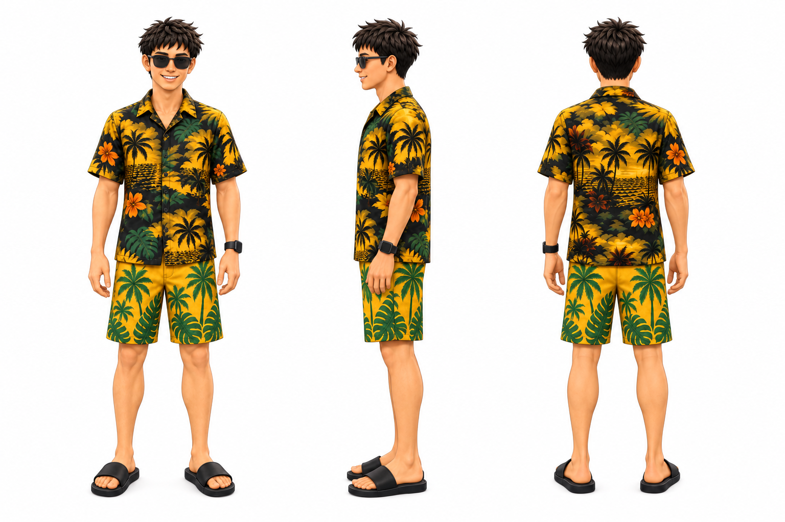
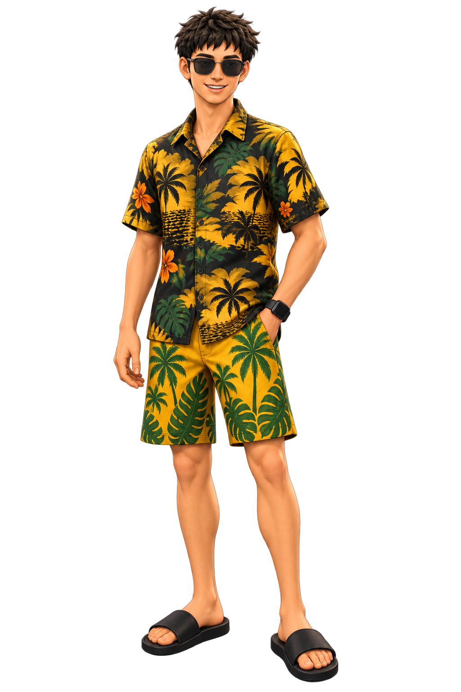

2026-10-01 · 已确认 · 默认采用 3D
金尘马的 3D 视觉方向
保留原有成年人体比例和人物识别，用柔和立体体块与哑光表面呈现。人物和道具向本目录候选配色靠拢；已接入默认人物与画风，旧版独立保留。
人物与插图配色
· 带立体感的二维 PNG
单人物参考 · 检查轮廓、服装、左腕手表与一字拖 工作场景配色样图 · 检查人物与道具是否协调
工作场景配色样图 · 检查人物与道具是否协调 小尺寸检查
 人物：192 px 高场景：480 px 宽
人物：192 px 高场景：480 px 宽检查人物识别、服装纹样密度和卡片插入文件夹的动作。此处尺寸用于审阅，不构成默认输出规则。
多角度校验

同一个角色的三个角度，用于核对身体比例和身份一致性。
本轮使用的品牌候选色
黑#1A1A1A
金黄#F7C948
绿#1F8F4B
青#2EC4C7
橙#FF8A3D
奶油白#F8F6F1
黑、金黄、绿建立人物识别；青、橙用于必要道具或少量点缀；奶油白用于纸张和中性物件。每张图只选择需要的颜色，皮肤保持自然肤色，背景仍以白色为主。
已确认与保留观察
立体感是否合适、纹样是否过密、小图是否清楚。不同视角的纹样有生成性变化；色值是材质基色目标。默认已转为本轮 3D；旧版需明确选择。
第一版过程资料

仅用于追溯，不作为选用参考。